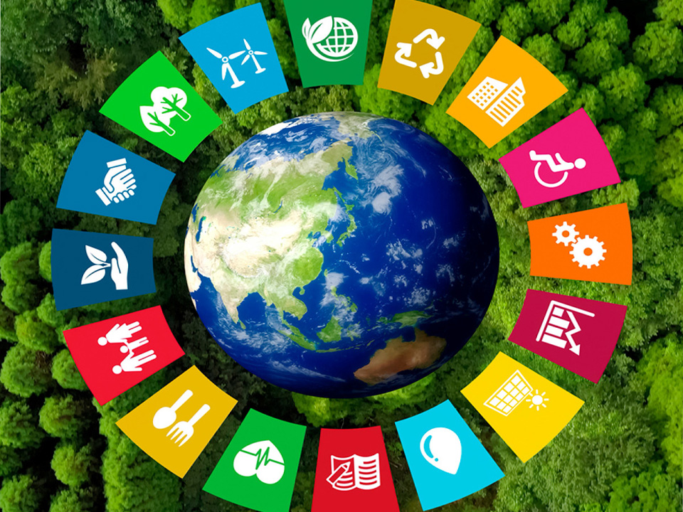

Introducción a los Objetivos de Desarrollo Sostenible
La Agenda 2030 para el Desarrollo Sostenible, aprobada en 2015 por los 193 Estados Miembros de las Naciones Unidas, establece 17 Objetivos de Desarrollo Sostenible (ODS), con 169 metas y 231 indicadores. Estos Objetivos convocan a la acción para poner fin a la pobreza, proteger el planeta y mejorar la vida de las personas, y se agrupan en cinco esferas críticas: Personas (ODS 1, 2, 3, 4 y 5), Planeta (6, 7, 13, 14 y 15), Prosperidad (8, 9, 10, 11 y 12), Paz (16) y Alianzas (17).
Los 17 ODS forman un plan de acción integral, indivisible y de alcance universal, cuya visión transformadora hacia un desarrollo sostenible incorpora la dimensión económica, la social y la ambiental. Estos objetivos son civilizatorios: contemplan la responsabilidad de todos los Estados de respetar y promover los derechos humanos. Constituyen, además, una herramienta de planificación y seguimiento a largo plazo —tanto a nivel nacional como local— en la que cada gobierno decide cómo incorporarlos a sus políticas públicas, según el principio de responsabilidades comunes pero diferenciadas, acorde a los niveles de desarrollo de cada país.
En la Cumbre sobre los ODS de 2019, los líderes mundiales solicitaron una década de acción urgente y ambiciosa para alcanzar los objetivos en 2030, promoviendo acciones a nivel mundial, local e individual que impulsen esas transformaciones.
En ese contexto surgen nuevas demandas y exigencias para los puertos. Se espera que la sostenibilidad se convierta en una prioridad para las autoridades y empresas portuarias de la región y que sea parte central de la gestión estratégica de cada puerto. La sostenibilidad portuaria considera el desempeño de la organización desde cuatro dimensiones complementarias.
Las cuatro dimensiones de la sostenibilidad portuaria
Dimensión Económica ODS 1, 2, 7, 8, 9, 10, 12
Aborda la necesidad de que el puerto sea económica y financieramente viable para garantizar su crecimiento y sostenibilidad en el tiempo, enfrentando los desafíos de la transición energética y la economía circular.
Dimensión Ambiental ODS 3, 6, 7, 9, 11, 12, 13, 14, 15
Propone reducir el impacto que las operaciones puedan ejercer sobre el ambiente, estableciendo políticas de conservación de ecosistemas, protección de la biodiversidad, gestión ambiental, mitigación y adaptación al cambio climático y prevención de accidentes ambientales.
Dimensión Social ODS 1, 2, 3, 4, 5, 6, 7, 8, 10, 11
Busca atender los impactos externos e internos de la operación portuaria, con políticas que inviertan en capital humano y contribuyan a la distribución sostenible de alimentos, la seguridad social, el acceso a la educación y el bienestar de la comunidad local.
Dimensión Institucional ODS 16 y 17
Asegura el funcionamiento institucional para que la organización portuaria aumente sus capacidades de gestión y competitividad, permita la adaptación oportuna a cambios tecnológicos, industriales y de mercado, y garantice una gobernanza renovada.
Entre los objetivos de mayor incidencia en los puertos se destacan el 9 — Industria, Innovación e Infraestructura, el 11 — Ciudades y Comunidades Sostenibles, el 8 — Trabajo Decente y Crecimiento Económico, el 3 — Salud y Bienestar, el 17 — Alianzas para Lograr los Objetivos y el 13 — Acción por el Clima.